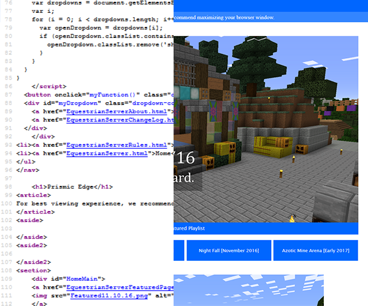
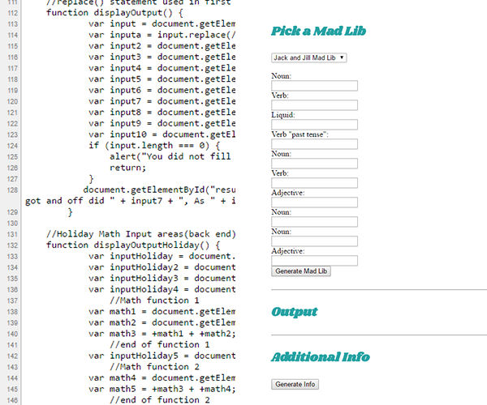

Purpose
Throught our time at Meridian Technical Charter High School we create classroom projects. We also create our own things when time permits. This website is showcasing many of my coding creations throughout Sophomore and Junior year. This website also shows our five tech standards and demonstrations the sub standards through the websites that are displayed.
My Projects

Prismic Edge
This example is one of my first personal projects which I created which acts as an information hub for a server I game on with friends in Minecraft. It was one of my first scaling sites.
